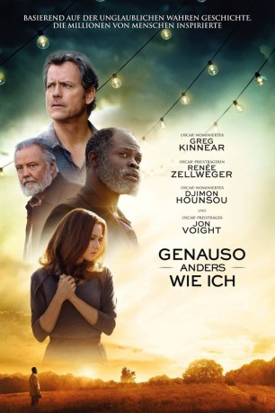
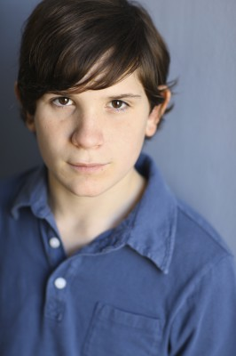

#8258 Genauso anders wie ich
Alternativ: Same Kind of Different as Me
 
 IMDB-Wertung: 6.5 / 10
IMDB-Wertung: 6.5 / 10  Metascore: 47
Metascore: 47 
Kunsthändler Ron Hall (Greg Kinnear) und seine Frau Deborah (Renée Zellweger) führen nach außen hin das perfekte Leben: Sie sind reich, in ihrer Gemeinde angesehen und sozial engagiert. Doch zu sagen hat sich das seit 19 Jahren verheiratete Paar kaum noch etwas, zudem hat Ron eine außereheliche Affäre begonnen. Deborah hingegen ist mit ihren seltsamen Träumen beschäftigt: Immer wieder sieht sie im Traum einen Mann, der für ihr Leben wichtig zu sein scheint, den sie aber nicht kennt. Umso erstaunter ist sie, als dieser Mann eines Tages in der Suppenküche, in der sie aushilft, tatsächlich vor ihr steht. Zwischen dem in Armut aufgewachsenen, obdachlosen Denver Moore (Djimon Hounsou) und dem Ehepaar Hall entsteht nach und nach eine tiefe Freundschaft, die alle kulturellen und sozialen Unterschiede überwindet und alle Beteiligten mit neuer Lebensfreude erfüllt. Doch dann kommt es zu einer Tragödie...
Jahr: 2017
Dauer: 119 Minuten
FSK: 6
Land: USA Studio: Paramount PicturesTonspuren: DD5.1 - ,
Untertitel: Deutsch, Englisch,
Auflösung: 1080p (1920x800) Größe: 6420 MB
Genre: Drama
Regisseur: Michael Carney
Drehbuch: Michael Carney
Soundtrack: John Paesano
Darsteller:
 Renée Zellweger als Deborah Hall
Renée Zellweger als Deborah Hall Jon Voight als Earl Hall
Jon Voight als Earl Hall Djimon Hounsou als Denver
Djimon Hounsou als Denver Greg Kinnear als Ron Hall
Greg Kinnear als Ron Hall Olivia Holt als Regan Hall
Olivia Holt als Regan Hall Dana Gourrier als Willow
Dana Gourrier als Willow Stephanie Leigh Schlund als C.C.
Stephanie Leigh Schlund als C.C.- Ann Mahoney als Clara
-  Peyton Wich als Young Bobby
 Lara Grice als Bobby's Mom
Lara Grice als Bobby's Mom- Tonea Stewart als Big Mama
 David Jensen als Bum
David Jensen als Bum Daniel Zacapa als Julio Larraz
Daniel Zacapa als Julio Larraz Geraldine Singer als Tommye Hall
Geraldine Singer als Tommye Hall Thomas Francis Murphy als Chef Jim
Thomas Francis Murphy als Chef Jim Mykel Shannon Jenkins als B.B.
Mykel Shannon Jenkins als B.B. Al Mitchell als Old Black Man
Al Mitchell als Old Black Man- Kenda Benward als Janet
- Nyles Steele als Chook
- Theodus Crane als Tiny
- Ty Parker als Bobby
 Lucky Johnson als Thug
Lucky Johnson als Thug- Rudy Eisenzopf als Bus Driver
- Austin Filson als Carson Hall
- Jaclyn Bethany als 1940s Girl
- Regina Taufen als Voice
 John Newberg als Hank
John Newberg als Hank- Vince Pisani als Curator
- Trey McGriff als Crazy Homeless Man
- Anne Speed als Dream Walker
- Laura Pittman als Art Gallery Patron
- Mary Hunter Johnston als Little Girl
- Emerson Rhinewalt als Carla's Son
- Michael Southworth als Assistant Chef
- Ashton Cotton als Young Denver
- Lamar Lott als Mourner (uncredited)
- Justin Mabry als Artist, Funeral attendee (uncredited)
- Wendie Sheppard als Friend of Family (uncredited)
- Calvin Williams als Uncle James
- Stacy Hall als Brother Brown
- Tyler Galpin als Weasel
- David Dino Wells Jr. als Mister
- John Teal Jr. als Homeless Core Group
- Pedro Lucero als Killer
- Abigail C Addison als Pedestrian
- O.S. Hawkins als Pastor
- Nathan Tremaine als Bum
- Emanuel Brooks als Dream Walker
- Griffin Donnell als Little Girl
- Leslie Saucier als Family Mourner (uncredited)
Datei: X:\2017(G-M)\Genauso anders wie ich (2017, FSK6, 1920x800).mkv seit 14.02.2018
Festplatte: HD 2017(A-Z)-2018(A-F)
 Es gibt insgesamt 148 Filme in der Gruppe '2017(G-M)'
Es gibt insgesamt 148 Filme in der Gruppe '2017(G-M)'